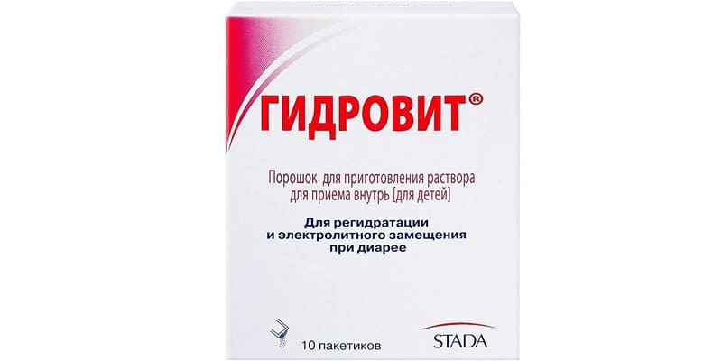
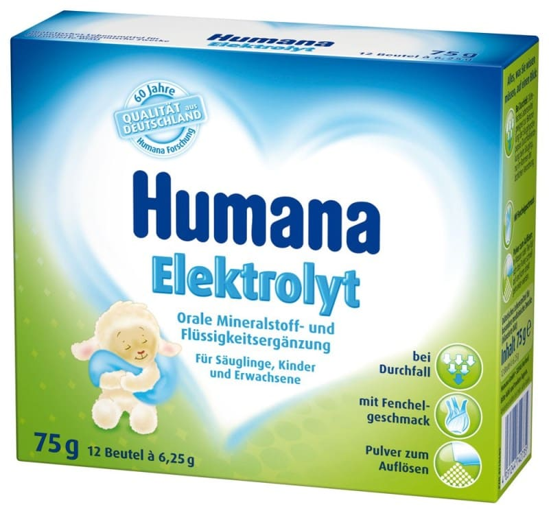
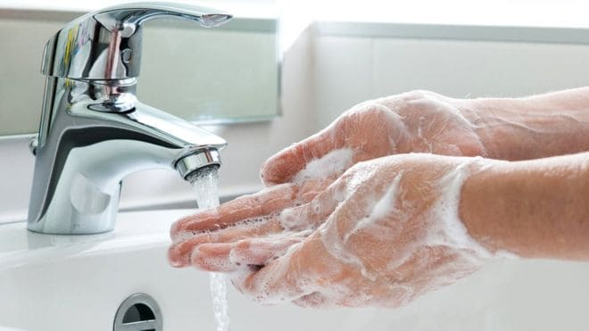

Вторым по частоте симптомом, пугающим родителей, является рвота, а вместе с ней нередко и диарея (понос).
Как простуда у детей чаще всего вызывается вирусами, но иногда бывает связана и с бактериями, так и рвота у детей чаще всего вызвана вирусным гастроэнтеритом и гораздо реже чем-то серьезным (дизентерией, холерой и т. д.).
Типичная вирусная кишечная инфекция (правильнее – острый вирусный гастроэнтерит) течет так: на фоне полного здоровья у ребенка резко возникает многократная рвота, нередко болезнь стартует ночью. Первые 2-12 часов ребенка беспокоит только тошнота, рвота и легкая боль в животе перед ней. Рвота от одного до 20–30 раз, сначала пищей, потом «водой», потом «желтой водой» (с желчью).
Под конец рвотного периода у ребенка часто бывают «холостые» рвотные движения. Затем рвота стихает и на 2–3 дня ребенок становится вялым со сниженным аппетитом. Нередко (но не всегда) после рвотного периода начинается лихорадка (до 39, буквально первые два дня) и диарея (обычно водянистая). Постепенно за 2–7 дней диарея стихает, аппетит и самочувствие улучшаются, и ребенок полностью выздоравливает.
Если купить аптечный препарат прямо сейчас у вас нет возможности, вполне можно отпаивать раствором домашнего приготовления: в один литр кипяченой воды добавить одну чайную ложку соли (без «горки») и шесть чайных ложек сахара (тоже без «горки»). Для детей до 5 лет берется вполовину меньше сахара и соли на тот же объем воды. Строго соблюдайте пропорции, так как слишком концентрированный раствор может усиливать рвоту и диарею.
Самое главное, что НУЖНО делать при остром гастроэнтерите, это отпаивать ребенка солевыми растворами. Примером аптечных глюкозо-солевых детских регидратационных растворов являются препараты Гидровит или Хумана Электролит.


Важно не только, ЧЕМ отпаивать, но и КАК: по 2–3 столовые ложки каждые пять минут.
Такой ритм легко переносится ребенком (если пить залпом – спровоцируем рвоту, а если слишком мало и редко, то неэффективно – ребенок обезводится). Нужно следить за признаками обезвоживания, прежде всего за частотой, объемом и характером мочи. Ребенка на грудном молоке НУЖНО прикладывать к груди как можно чаще.
Объем выпитой жидкости должен примерно на 1 литр превышать потери жидкости с поносом и рвотой.
Если ребенок наотрез отказывается пить солевые растворы, поите компотом, разведенным соком или лимонадом без газов, это менее эффективно, но лучше, чем ничего. При гастроэнтерите НЕЛЬЗЯ нельзя давать «тяжелую» пищу: цельное молоко, жирное, жареное, копченое, концентрированные соки.
Ребенку, которого не удается адекватно отпаивать, показано внутривенное капельное вливание, то есть показанием для госпитализации в инфекционную больницу, прежде всего, является необходимость «капельницы», а если ребенка удается отпаивать, вы вполне справитесь с болезнью дома. В большинстве случаев одной «капельницы» хватает для выхода из опасного обезвоживания, затем ребенок начинает активно пить и выздоравливает сам.
Важно помнить, что «острый живот» (аппендицит, перитонит, инвагинация кишечника и др.) также могут проявляться рвотой, небольшими болями в животе, поэтому, чтобы не пропустить что-то более серьезное, чем простой гастроэнтерит, покажите ребенка врачу и спросите его, за какими симптомами вам следует наблюдать.
В периоде выздоровления кормить ребенка можно легкими супами, бульонами, нежирными кашами и другой легкой пищей, почаще и малыми порциями (раздраженный частыми рвотами желудок может не принять тяжелую или обильную пищу, и рвота может повториться).
Энтерофурил (стопдиар), смекта (неосмектин), линекс (аципол и прочее), креон (мезим) и имодиум (лоперамид), несмотря на чрезвычайную популярность в нашей стране, не имеют доказанной эффективности в лечении острых вирусных гастроэнтеритов.
Профилактика – тщательная гигиена, мытье рук. Заражение внутри семьи происходит чрезвычайно часто.

(Сергей Бутрий "Здоровье ребенка: современныйподход")